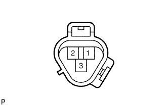
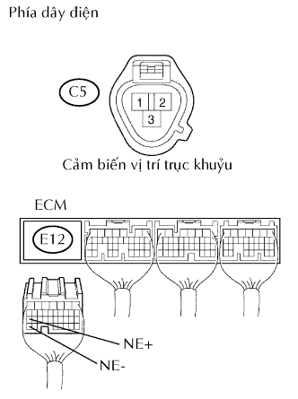
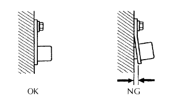

DTC P0335/13 Mạch cảm biến vị trí trục khuỷu "A" |
DTC P0339/13 Mạch cảm biến vị trí trục khuỷu "A" chập chờn |
| Số mã DTC | Điều kiện phát hiện DTC | Khu vực nghi ngờ |
| P0335/13 | Không có tín hiệu cảm biến vị trí trục khuỷu đến ECM tại tốc độ động cơ 600 vòng/phút trở lên (thuật toán phát hiện 1 hành trình) |
|
| P0339/13 | Dưới các điều kiện (a), (b) và (c), không có tín hiệu vị trí trục khuỷu đến ECM trong 0.05 giây hay hơn.
|
|
| 1.KIỂM TRA CẢM BIẾN VỊ TRÍ TRỤC KHUỶU (ĐIỆN TRỞ) |
|  |
Ngắt giắc nối C5 của cảm biến.
Đo điện trở giữa của cảm biến.
| Nối dụng cụ đo | Điều kiện tiêu chuẩn | Điều kiện tiêu chuẩn |
| 1 - 2 | Lạnh | 1,630 đến 2,740 Ω |
| 1 - 2 | Nóng | 2,065 đến 3,225 Ω |
|
| ||||
| OK | |
| 2.KIỂM TRA DÂY ĐIỆN (CẢM BIẾN VỊ TRÍ TRỤC KHUỶU - ECM) |
|  |
Ngắt giắc nối C5 của cảm biến.
Ngắt giắc nối E12 của ECM.
Đo điện trở của các giắc nối phía dây điện.
| Nối dụng cụ đo | Điều kiện tiêu chuẩn |
| C5-1 - E12-27 (NE+) | Dưới 1 Ω |
| C5-2 - E12-34 (NE-) | Dưới 1 Ω |
| C5-1 hay E12-27 (NE+) - Mát thân xe | 10 kΩ trở lên |
| C5-2 hay E12-34 (NE-) - Mát thân xe | 10 kΩ trở lên |
|
| ||||
| OK | |
| 3.KIỂM TRA CẢM BIẾN VỊ TRÍ TRỤC KHUỶU (SỰ LẮP RÁP) |
|  |
Kiểm tra rằng cảm biến vị trí trục khuỷu được lắp chính xác.
|
| ||||
| OK | |
| 4.KIỂM TRA ĐĨA TÍN HIỆU CẢM BIẾN VỊ TRÍ TRỤC KHUỶU (RĂNG) |
Kiểm tra rằng răng đĩa tín hiệu cảm biến không có bất kỳ vết nứt hay biến dạng.
|
| ||||
| OK | ||
| ||